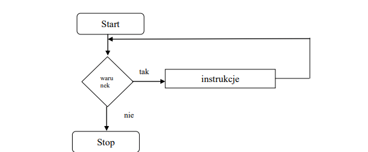

Pętla while
Pętla typu while jest pętlą z kontrolowanym wejściem tzn. najpierw jest obliczany warunek a po jego spełnieniu wchodzimy do pętli i wykonujemy instrukcje z niej.
Konstrukcja pętli while wygląda następująco:
while (Wyrażenie_logiczne)
{ Instrukcja1;
………………………………………..
InstrukcjaN; }
Jeśli Wyrażenie_logiczne ma wartość logiczną zera, to nie zostaną wykonane Instrukcje czyli nie nastąpi wejście do pętli.
